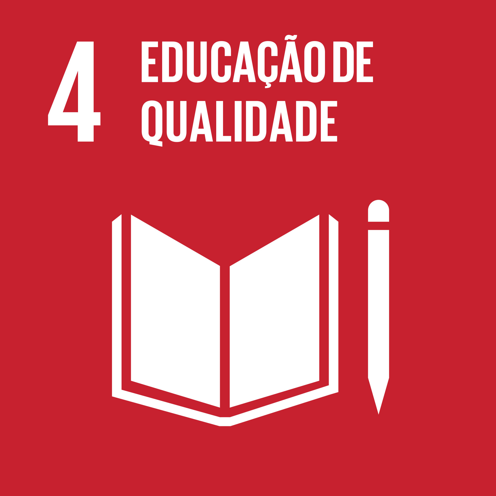
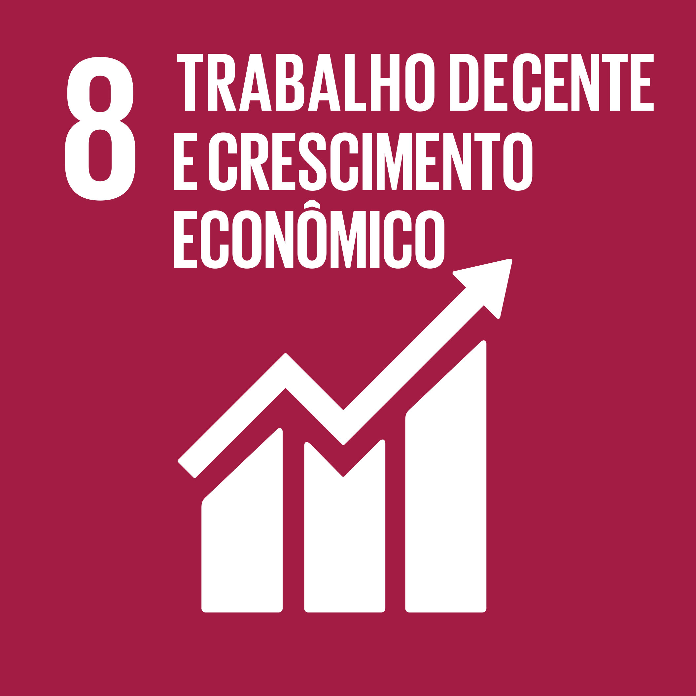
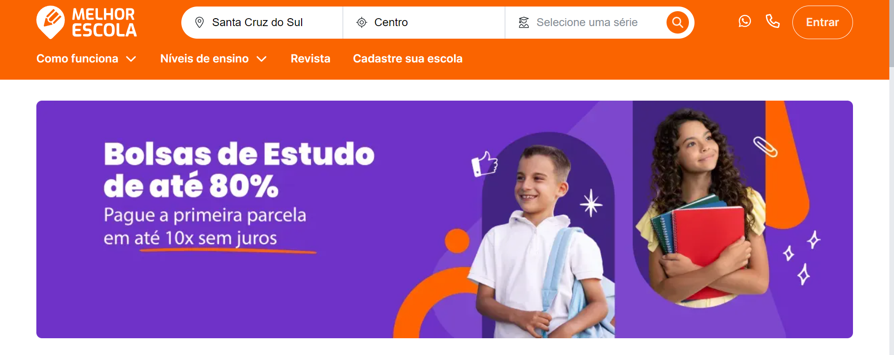
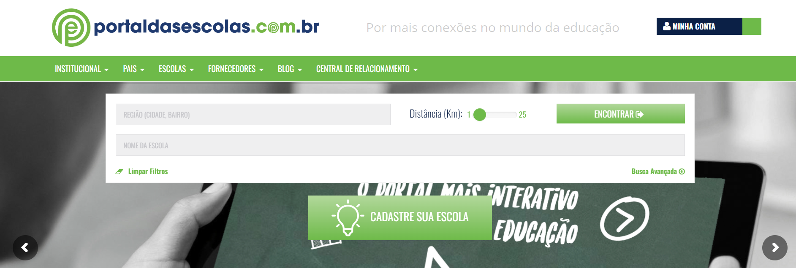

ODS - Objetivo do Desinvolvimento Sustentável
ODS 4: Educação de qualidade.
Visa garantir uma educação inclusiva, equitativa e de qualidade para todos, bem como promover oportunidades de aprendizagem ao longo da vida. Isso implica assegurar acesso igualitário à educação, independente de origem ou condição socioeconômica, e promover padrões elevados de qualidade na educação, incluindo currículos relevantes e aprendizagem ao longo da vida.
ODS 8: Trabalho decente e crescimento econômico.
Busca promover um crescimento econômico sustentável e inclusivo, garantindo empregos dignos e produtivos para todos, especialmente para os jovens. Isso inclui a redução do desemprego, a promoção de condições de trabalho seguras e o estímulo ao empreendedorismo e à inovação, considerando também os impactos ambientais e sociais. 
Mais sobre as ODS's aqui
Referência
Notícia G1
Problema
Soluções existentes
Melhor escola
